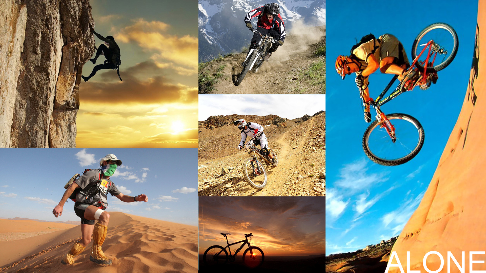
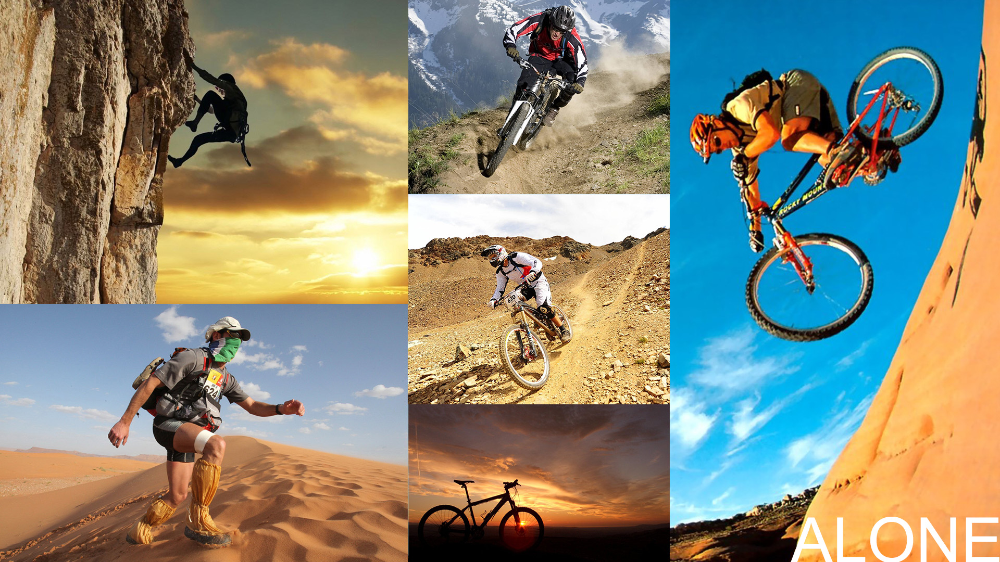

De opdracht
Gedurende de lesweken VC12 krijgt de student les in communicatietheorie, het opstellen van een merkdocument, het ontwerpen en uitwerken van cross mediale campagne en verschillende ICT en niet-ICT onderdelen daarvan.
De studenten werken in groepen. Elke klas wordt verdeeld in zes groepen (4 personen per groep). Deze groepen krijgen ieder een nieuw en innovatief product toegewezen. Als groep vormen zij een reclamebureau en ze moeten het betreffende product gaan ‘branden’ om dit vervolgens visueel te communiceren aan de doelgroep..
Uitwerking
In het begin zijn we het product (De PFO Tech GPS armband) gaan onderzoeken en uit dit onderzoek hebben we een aantal dingen vastgesteld zoals de kernwaarden, Doelstellingen en UPS's van het product.
Om vervolgens het product visueel te communiceren heb ik 2 moodboards gemaakt.
Moodboards:
 

Moodvideo:
Nadat ik de moodboards heb gemaakt ben ik een moodvideo gaan maken om de assosiatie tussen de armband en extreme sporten nog sterker te maken.
Posters:
Een belangrijk onderdeel van visueel communiceren zijn natuurlijk poster. Na veer itereren ben ik bij dit design uitgekomen en heb hier verschillende varianten van gemaakt.